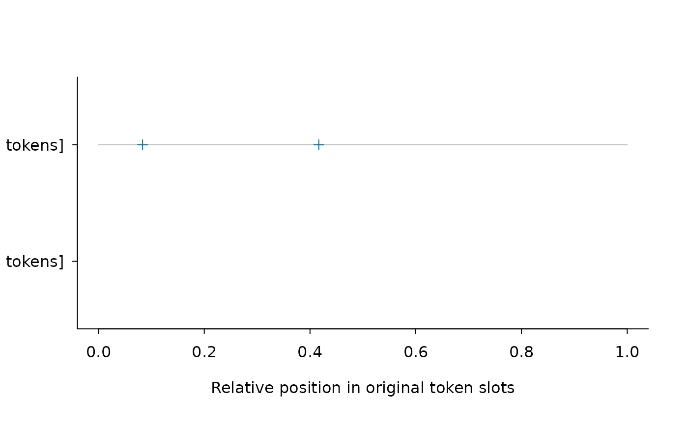

Search Source-Aligned Words and Phrases and Inspect Their Distribution
lexdiv_concordance.RdSearch complete annotations (from lexdiv_import_annotations or
lexdiv_as_annotations), preserving original text, token positions,
selection masks and zero-match documents. Sort saved contexts, draw Base-R
positional barcode plots, or compute single-token within-document dispersion.
Usage
lexdiv_concordance(
x,
queries,
term_col = "surface",
valuetype = c("fixed", "glob", "regex"),
case_insensitive = FALSE,
keep = rep(TRUE, nrow(x$tokens)),
window = 5L,
max_cells = 1e6
)
lexdiv_sort_concordance(
x,
side = c("right", "left"),
depth = 1L,
case_insensitive = FALSE
)
lexdiv_concordance_dispersion(
x,
query_id = NULL,
parts = 10L,
max_cells = 1e6
)
# S3 method for class 'lexdiv_concordance'
print(x, ...)
# S3 method for class 'lexdiv_dispersion'
print(x, ...)
# S3 method for class 'lexdiv_concordance'
plot(
x,
query_id = NULL,
relative = TRUE,
monochrome = FALSE,
col = NULL,
main = NULL,
xlab = NULL,
ylab = "",
...
)Arguments
- x
For
lexdiv_concordance(), an unmodifiedlexdiv_annotationsobject. For sorting, dispersion, and plotting, an unmodifiedlexdiv_concordanceobject. Forprint.lexdiv_dispersion, alexdiv_dispersionobject.- queries
Named list with unique nonblank query IDs.
- term_col
Character token column to search, such as
"surface","term"(fromlexdiv_as_annotations()), or"lemma".- valuetype
Fixed, glob or regex matching through optional quanteda.
- case_insensitive
Logical switch for case-insensitive matching or sorting.
- keep
One nonmissing logical value per original token.
- window
Nonnegative number of context surface-token slots on each side.
- max_cells
Positive whole-number allocation bound.
- side
Context side to sort, nearest token first.
- depth
Positive number of context tokens used as successive sort keys.
- query_id
Saved query ID to inspect. Defaults to the sole query when
xcontains exactly one query.- parts
Number of within-document parts (integer >= 2).
- relative
Plot relative positions in
[0, 1](TRUE) or raw token positions (FALSE).- monochrome
Use black rather than default color.
- col, main, xlab, ylab
Base-R graphics styling parameters.
- ...
Additional Base-R graphics or
print.data.frame()arguments.
Value
lexdiv_concordance() returns a sealed lexdiv_concordance object.
lexdiv_sort_concordance() returns an ordered occurrence data frame.
lexdiv_concordance_dispersion() returns a lexdiv_dispersion
object with documents and parts. plot() draws a Base-R
positional plot and invisibly returns list(occurrences, documents, counts).
Examples
ann <- lexdiv_as_annotations(c(d1 = "Cats chase cats and dogs.", empty = ""))
if (requireNamespace("quanteda", quietly = TRUE)) {
search <- lexdiv_concordance(ann, list(cat = "cats"), term_col = "term")
print(search)
lexdiv_sort_concordance(search, case_insensitive = TRUE)
lexdiv_concordance_dispersion(search, parts = 3)
plot(search)
}
#> <lexdiv_concordance: 2 documents; 1 query; 2 occurrences>
#> query_id document_id segment_id from to pre keyword
#> cat d1 s1 1 1 Cats
#> cat d1 s1 3 3 Cats chase cats
#> post
#> chase cats and dogs.
#> and dogs.
